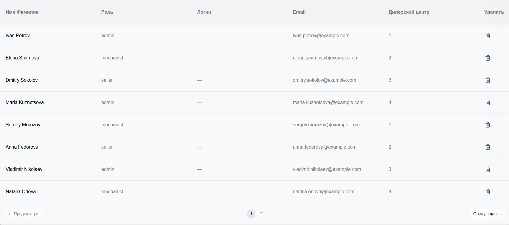

Наша подгруппа работает над созданием базы данных сотрудников дилерских центров BMW Россия. Мы разрабатываем удобную и эффективную систему для управления информацией о персонале, чтобы оптимизировать процессы в дилерских центрах. В условиях санкций этот проект особенно актуален для России, так как позволяет локализовать управление данными и снизить зависимость от зарубежных решений.
Узнать большеПроект посвящён разработке базы данных сотрудников дилерских центров BMW Россия. Наша цель — создать централизованную систему, которая позволит хранить, обновлять и анализировать информацию о сотрудниках, обеспечивая удобный доступ для менеджеров и администраторов. В условиях санкций проект приобретает особую значимость, так как обеспечивает независимость от зарубежных систем управления персоналом и повышает устойчивость работы дилерских центров в России.
Основные цели проекта:
Проект реализуется в сотрудничестве с BMW Россия, которая предоставляет экспертную поддержку и доступ к необходимым данным.
Роль: Разработчик.
Вклад: Разработка компонента общей таблицы и страницы с таблицей всех сотрудников.
Роль: Разработчик.
Вклад: Разработка импорта таблиц сотрудников BMW.
Мы провели встречу с BMW Россия, где обсудили ключевые требования к базе данных сотрудников и согласовали план работы на следующий семестр. Также нам организовали экскурсию по тренинг-центру, что помогло лучше понять процессы в дилерских центрах.
Завершена разработка компонента общей таблицы для базы данных сотрудников. Начал работу над страницей, отображающей таблицу всех сотрудников, чтобы обеспечить удобный доступ к данным.
Завершена разработка импорта таблиц сотрудников BMW.
Полезные материалы, которые помогут лучше понять суть нашего проекта: